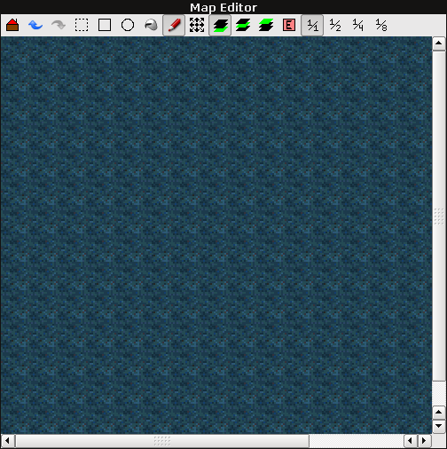
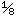

[User Interfaces]->[Main Window]->[Map Editor]

This is where you create actual maps at.
Each tool button at the top represents one of the following:
- Generates a preview a the map, which can optionally be saved to an external image file.

- Undoes changes made to the current map.
- Redoes changes made to the current map.
- Enters selection mode, where you can copy/cut/paste parts of the map to other locations on the map or other maps (see Tutorials->Map Editor->Selection Mode for information on how to use it).
- Enters draw mode, and makes it so you draw rectangles on the map (see Tutorials->Map Editor->Draw Mode for more information on how to use it).

- Enters draw mode, and makes it so you draw circles on the map (see Tutorials->Map Editor->Draw Mode for more information on how to use it).

- Enters draw mode, and makes it so you fill areas of the map (see Tutorials->Map Editor->Draw Mode for more information on how to use it).

- Enters draw mode, and makes it so you draw one tile at a time (see Tutorials->Map Editor->Draw Mode for more information on how to use it).

- Enters tiling mode, where you can fine tune the tiling of all the block/animated-block tiles (see Tutorials->Map Editor->Tiling Mode for more information on how to use it).
- Changes the current layer to the lower layer.
- Changes the current layer to the hero layer.
- Changes the current layer to the upper layer.

- Changes the current layer to the event layer. Right clicking on the map will now bring up the event context menu (not yet implemented).
- Changes the zoom ratio to 1/1.
- Changes the zoom ratio to 1/2.
- Changes the zoom ratio to 1/4.
- 
- Changes the zoom ratio to 1/8.